1Brigham Young University 2Acceleration Consortium, University of Toronto
*Corresponding authors
Manuscript in preparation for Digital Discovery · three accepted abstracts at TMS 2027
Additive manufacturing of aerospace structural alloys depends on rapid, reproducible exploration of powder feedstocks, yet accurately metering and blending dry metal powders remains a largely manual bottleneck in research laboratories. Commercial dispensers are often cost-prohibitive and poorly matched to alloy-focused, many-powder workflows, and existing open-source designs have not been rigorously developed or tested for laser powder bed fusion (L-PBF). We developed an open-source, low-cost, modular powder doser for metal and feedstock powders, intended for a self-driving materials-discovery loop in which dosed powders feed ultrasonic atomization and L-PBF of aerospace alloys. The first module, a single channel built from 3D-printed parts and off-the-shelf electronics, cost under $200 plus an analytical balance, roughly two orders of magnitude below commercial dosing heads. In closed loop, every 1 g dose on seven of 13 tested powders landed within ±5% of the target, and the nine on AlSi10Mg, coarse silicon, and sodium sulfate landed within 1%; smaller doses were less reliable. The doser also ran inside an inert-atmosphere glove box under the control of an AI agent, and weighed AlSi10Mg into a charge that our ultrasonic atomizer turned into new powder. Its parts were designed by engineers and, from April to July 2026, modeled by AI agents (GitHub Copilot with Claude Opus 4.7–4.8; Zoo Design Studio's Zookeeper): engineers supplied dimensions, sketches, and manufacturing constraints; AI modeled the parts as editable parametric scripts; and engineers reviewed, printed, and iterated. AI was most effective as a modeling assistant rather than an autonomous design agent.
MS&T 2026 talk, starting at 8:34 (open on YouTube).
Weighing out dry powders is still mostly done by hand, and commercial dosing heads cost tens to hundreds of thousands of dollars. This doser is a single channel made from 3D-printed parts and off-the-shelf electronics for under $200, plus an analytical balance. A stepper motor turns the auger tube, two servos tilt it, and a solenoid taps it.
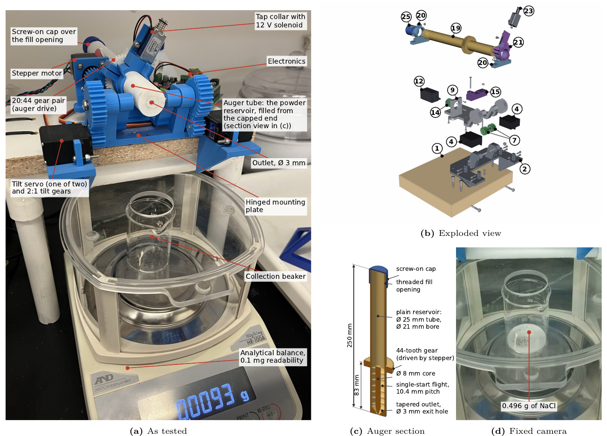
(a) The doser as tested in the second round (photographed 11 Sep 2026), with its main parts labelled; the auger tube is shown in section in (c).
(b) Exploded view of the current design, assembled in CAD from the team's parts (#170), with the 13 main parts numbered beside them as in the bill of materials (SI Fig. S4): the auger (19) and its screw-on cap (25); the tap collar (21), its solenoid (23) and the tap-collar base (15); the two brackets that hold the auger (20); the hinged mounting plate (9); the stepper motor (12) and its pinion (14), which turn the auger's 44-tooth gear; the two tilt servos (4) and their pinions (7); the baseplate (2); and the mounting board (1). Screws and nuts are numbered only in SI Fig. S4.
(c) Section through the tested auger and its screw-on cap, the team's Fusion 360 part: the flight fills only the outlet end, and the 44-tooth gear is on the outside of the tube.
(d) The fixed livestream camera's view of the cup after a 0.5 g NaCl dose (15 Sep 2026; 0.496 g delivered; #116).
The doser started at a three-day hackathon in April 2026 and was built in the open, in the repository's issues. AI agents modelled the first parts from text, sketches and dimensioned drawings. From July the engineers redrew in conventional CAD the parts that were built and tested, and the agents moved on to running the tests, analysing the data and assembling the CAD.
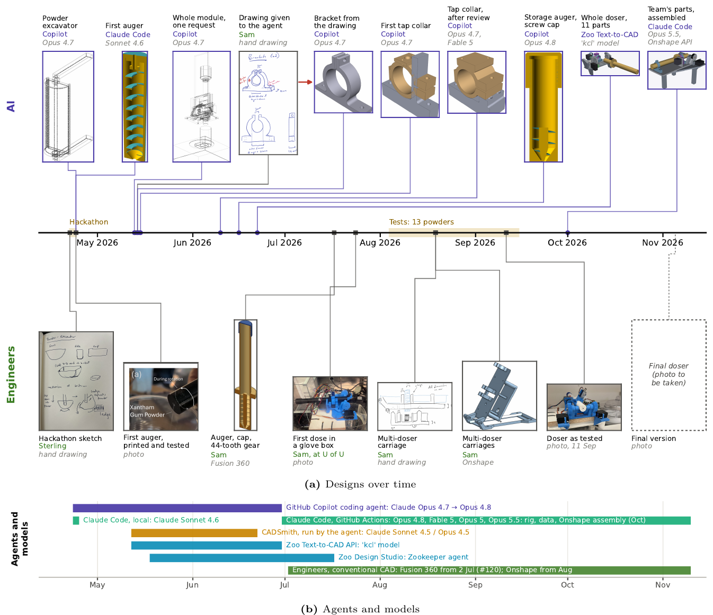
(a) Key designs on one date axis, each joined to its date. Above the axis are the designs modelled by AI agents, each tagged with the agent (purple) and model (grey): the powder excavator (#2) and the first auger (#16), from the hackathon (the first auger is the 24 Apr OpenSCAD design, in section); the whole module from a single request (#35); the bracket the agent modelled from the team's dimensioned drawing (#46, #47), shown beside the drawing (grey frame; red arrow); the first tap collar and the collar after review (#51); the storage auger with its screw cap (#49); all 11 parts from one prompt through the Zoo Text-to-CAD API (#104, #110); and the team's parts assembled through the Onshape API (#170). Below the axis is the engineers' work, each design tagged with who made it (green) and the tool (grey); photographs are labelled as photographs: the hackathon sketch (#1), the first printed auger, the Fusion 360 auger, cap and 44-tooth gear that turned in every test (#120), the first dose in a glove box, by Sam with colleagues at the University of Utah (#117), the multi-doser carriage sketch and Onshape model (#128), and the doser as tested (#156). The hackathon (22–24 Apr) and the 13-powder test campaign (4 Aug–15 Sep) are shaded on the axis.
(b) When each agent and model was in use, on the same date axis. Claude Code ran locally at the hackathon and in GitHub Actions from 30 Jun; both are on one line. The engineers' conventional CAD is in green.
The parts the agents modelled were a starting point rather than the finished design: the tap collar, the auger and the bracket were all revised or replaced, before the tests or since.
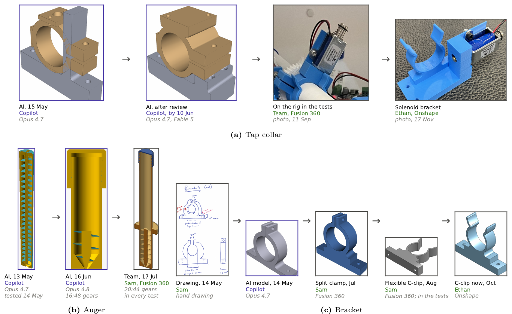
(a) Tap collar to solenoid bracket: the first AI collar (15 May) and the collar after review (#51, by 10 Jun), the collar on the rig during the tests (11 Sep, #156), and Ethan's solenoid bracket, which mounts the solenoid on the plate without a collar so that an auger can be swapped without taking the tapper off (first version 7 Nov, Onshape, #203; photographed 17 Nov).
(b) Auger, in section: the first auger to be printed and tested, begun at the hackathon and shown as the agent's version of 13 May with the flight on a central shaft, run with NaCl on 14 May (#16); the agent's storage auger with 16:48 gears (16 Jun, #49); and Sam's Fusion 360 recreation of it with 20:44 gears (17 Jul, #120), which turned in every test.
(c) Bracket: the team's dimensioned drawing (#46) and the agent's model of it (#47), both 14 May, then the team's own versions: Sam's bolted split clamp (Fusion 360, Jul, #120), his open flexible C-clip, which was on the rig through the tests (from Aug), and Ethan's Onshape version of it on the current doser (#193, Oct).
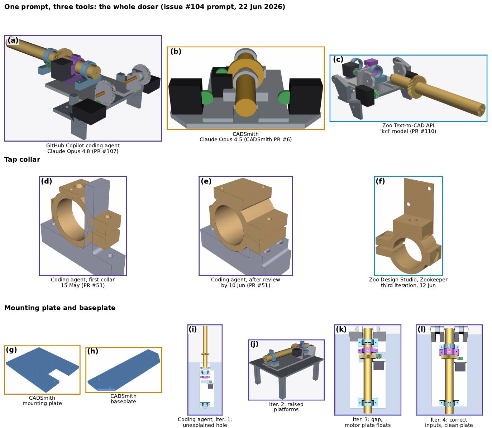
(a–c) The same prompt (#104, 22 Jun 2026) given to the GitHub Copilot coding agent, CADSmith and the Zoo Text-to-CAD API, each rendered from the same viewpoint.
(d–f) The tap collar from the coding agent (first version and after review) and from Zoo Design Studio (third Zookeeper iteration).
(g, h) CADSmith's mounting plate and baseplate.
(i–l) The coding agent's four mounting-plate iterations: out-of-date input files led to a hole, then platforms, then a gap, until the correct files were supplied.
A dose can be asked for in plain language in a GitHub comment. The agent passes the target to a three-phase controller on the doser's microcontroller, which reads the balance after every step and acts on the mass still to go: bulk, then fine, then tap.
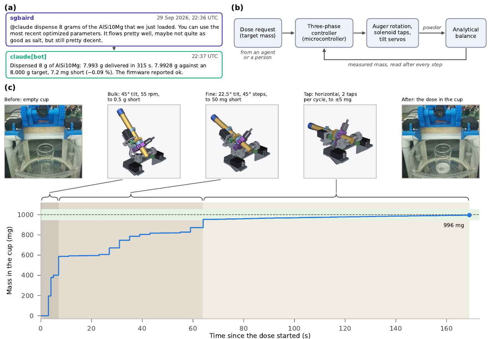
(a) A request and the agent's reply (8 g of AlSi10Mg for an atomizer charge, #166, 29 Sep 2026).
(b) The control loop: the balance is read after every step, and the controller acts on the mass still to go.
(c) One 1 g NaCl dose from the test campaign (12 Aug 2026), with its three phases shaded: bulk, fine and tap. A brace above the trace spans each phase, under the tube position in that phase (CAD renders of the current design at 45°, 22.5° and 0°); the fixed camera's stills before and after a 0.5 g salt dose (15 Sep 2026) are at either end. The green band is the ±5% acceptance limit.
Each powder lives in its own auger, filled once, capped and stored loaded, so changing powder means swapping a tube rather than cleaning one.
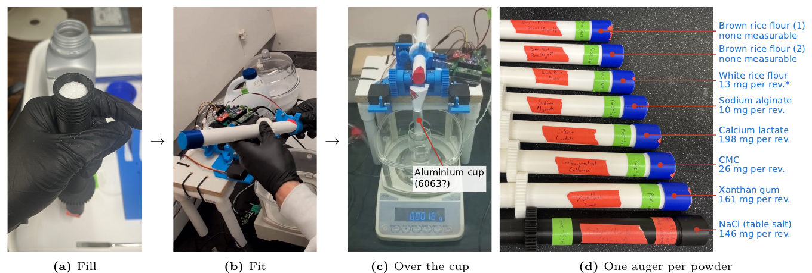
(a) Filling an auger with salt through its open end, then capping it (29 Jul 2026).
(b) Fitting a filled auger to the doser, and (c) the doser ready over the cup, frames from the 30 Sep 2026 dose video: the powder falls through a paper funnel into an aluminium cup that stands in the glass beaker. The aluminium cup is part of the alloy workflow itself: the dose lands directly in the cup used for the next step in making the alloy, so the powder is never transferred.
(d) The eight augers of the food-safe set (seven powders), capped and labelled (17 Nov 2026), each with the mass one auger revolution delivered (*at 22.5° tilt; Fig. 6a).
We tested seven food-safe surrogates and six research powders, including gas-atomized AlSi10Mg and two grades of silicon. Open loop, under one fixed set of settings, the powders spanned more than an order of magnitude in mass per revolution, and the flow came in waves, one surge per revolution.
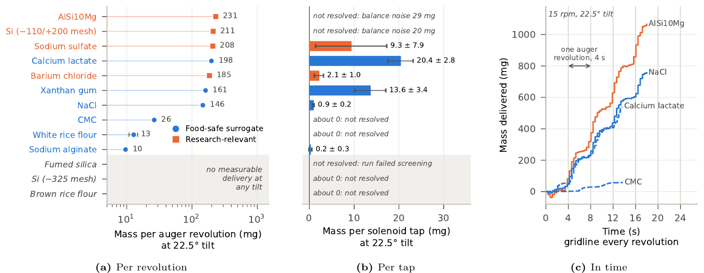
(a) Mass per auger revolution at 22.5° tilt (protocol C; mean ± standard error of six revolutions; log axis).
(b) Mass released by one solenoid tap at 22.5° tilt (protocol E): mean ± standard deviation of eight taps, the spread to expect from a single tap, drawn only where the tap was resolved (mean more than twice its standard error, as in Table S1). Each row without a bar says why. For AlSi10Mg and the coarse silicon, the balance noise with nothing moving (standard deviation 29 and 20 mg) was far larger than a tap; a tap cannot remove powder, and their negative means (−1.9 and −3.5 mg) were that noise. For CMC, the two rice flours and the fine silicon, most single taps read 0.0–0.1 mg. Fumed silica's only run failed screening. Table S1 gives the standard errors.
(c) Mass against time while the auger turned continuously at 15 rpm (protocol D), for a representative selection of four powders, from the fastest (AlSi10Mg) to a slow one (CMC). The flow came in waves: AlSi10Mg and NaCl each arrived in surges of about 200 mg every 4 s, once per auger revolution, with little in between. Gridlines every 4 s mark the auger revolutions.
Closed loop, the 1 g doses were the most reliable. The misses at 50 and 200 mg are mostly a control problem rather than a limit of the hardware, and the controller is what we are working on now.
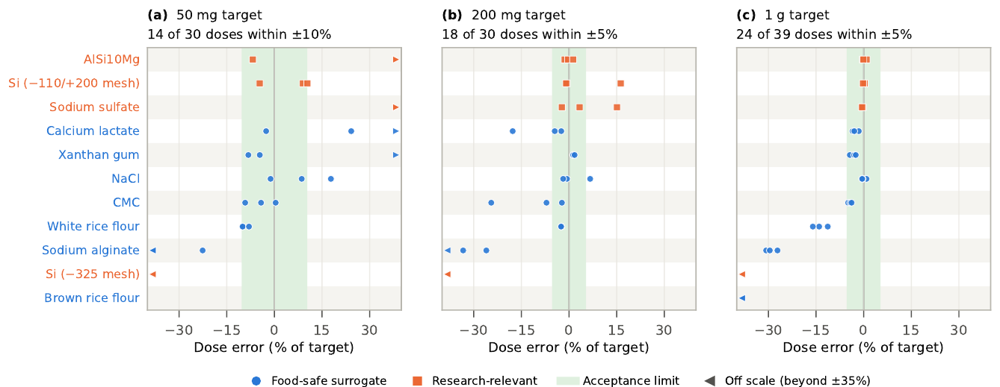
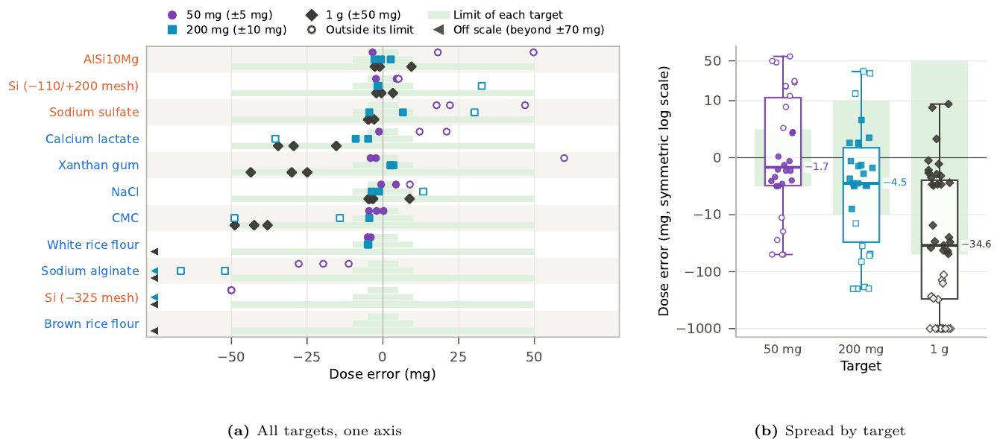
(a) Every valid closed-loop dose on one axis. Each powder row has three lanes: 50 mg (purple circles, top), 200 mg (teal squares, middle) and 1 g (dark diamonds, bottom), each with its own green limit band (±5, ±10 and ±50 mg). Filled markers are within that target's limit, open markers outside; the 19 doses beyond ±70 mg are arrows at the edge.
(b) Error by target as box plots, on a symmetric-log axis (linear within ±10 mg) so that a 5 mg miss and a 1000 mg miss show together. Every dose is drawn over its box, filled if it was within the limit; the boxes span the middle half of the errors, the whiskers reach the extremes, and the median is printed beside each box.
| Powder | Group | mg per rev. (22.5°) | 50 mg | 200 mg | 1 g | Observed behaviour |
|---|---|---|---|---|---|---|
| AlSi10Mg (gas-atomized) | Research | 231 | 1/3 | 3/3 | 3/3 | Fastest powder; fluid-like; overshoots small targets |
| Silicon, −110/+200 mesh | Research | 211 | 2/3 | 2/3 | 3/3 | Free-flowing |
| Sodium sulfate | Research | 208 | 0/3 | 2/3 | 3/3 | Free-flowing; overshoots small targets |
| Calcium lactate | Surrogate | 198 | 1/3 | 2/3 | 3/3 | Free-flowing; largest tap increment |
| Barium chloride | Research | 185 | – | – | – | Absorbed moisture and caked in the tube in round 2 |
| Xanthan gum | Surrogate | 161 | 2/3 | 3/3 | 3/3 | Flows under rotation; can clog after bursts |
| Sodium chloride (NaCl) | Surrogate | 146 | 2/3 | 2/3 | 6/6 | Free-flowing baseline (control) |
| Carboxymethyl cellulose (CMC) | Surrogate | 26 | 3/3 | 1/3 | 3/3 | Slow; charges electrostatically |
| White rice flour | Surrogate | 13 | 3/3 | 3/3 | 0/3 | Slow and pulsing; most variable between revolutions |
| Sodium alginate | Surrogate | 10 | 0/3 | 0/3 | 0/3 | Slowest powder that moved |
| Brown rice flour | Surrogate | none | – | – | 0/3 | No delivery at any tilt |
| Silicon, −325 mesh | Research | none | 0/3 | 0/3 | 0/6 | No delivery at 0 or 22.5°; one pulse at 45° |
| Fumed silica | Research | none | – | – | – | No delivery; very light and fluffy |
Mass per auger revolution: protocol C mean at 22.5° (Fig. 6a). Closed-loop columns: valid doses within the acceptance limit (±10% at 50 mg, ±5% at 200 mg and 1 g) out of the number run (Fig. 7); a dash means not run. Silicon grades by sieve size: −325 mesh passes a 44 µm sieve; −110/+200 mesh lies between about 75 and 150 µm.
The current design, with every part numbered as in the bill of materials. The CAD for each part is in Onshape, and the firmware, schematic and board files are in the repository.
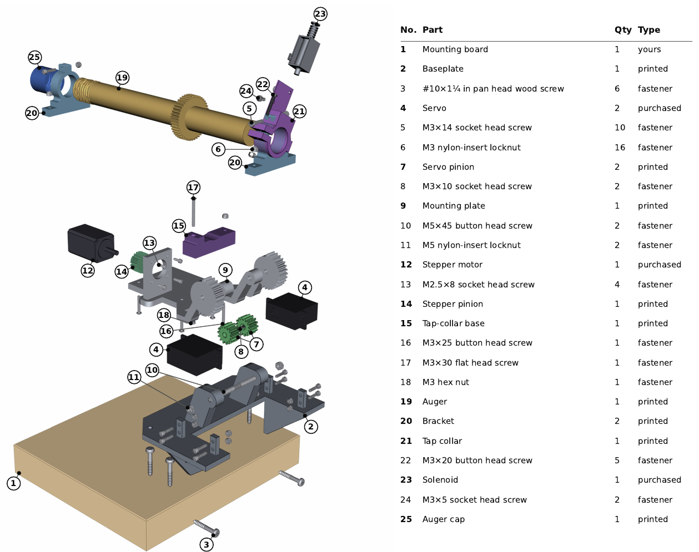
Exploded view assembled in CAD from the team's parts (#170), with each number beside its part, and the bill of materials with the quantity of each part and whether it is printed, purchased or a fastener.
One document per part, as listed by the team in #193, which also has the print settings. Sam's Fusion 360 links for the parts that ran in the tests are in #170.
| Part | Onshape document |
|---|---|
| Whole doser (assembly) | Assembly |
| Auger | Auger |
| Brackets that hold the auger | Flexible bracket |
| Tap collar | Tap collar |
| Solenoid bracket (replaces the tap collar; #203) | New solenoid setup |
| Hinged mounting plate | Mounting plate |
| Baseplate | Baseplate |
| Servo pinion | Servo pinion |
| Stepper pinion | Stepper pinion |
| Stand | Bracket (back), bracket (sides), wood leg |
The video demo linked from the poster.
On the balance.
3 Sep 2026, #148.
Livestream, 4 Sep 2026, #116.
An atomizer charge, including a stall and a clog (30 Sep 2026, #166); preparing the dose.
Slow dispensing of salt, with the University of Utah's Lessard Lab (#117).
With commentary (#92).
Pitch, 3D-printed prototype and V1 demo (#128).
Video tutorial.
BYU VCL Hardware Streams.
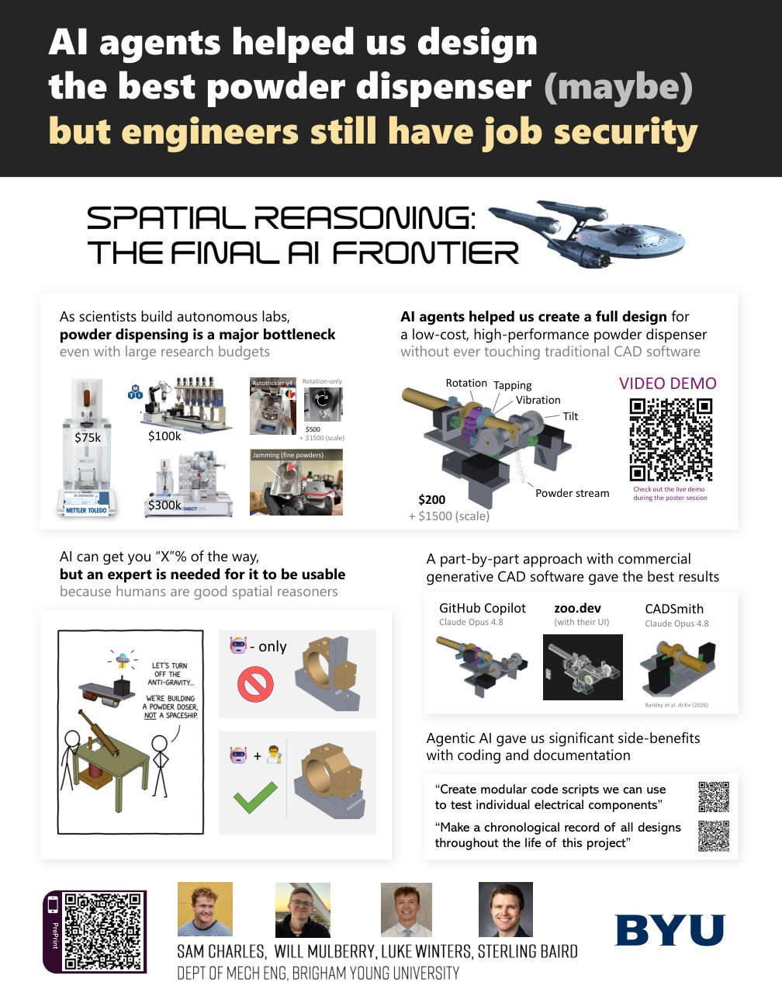
Poster. AI agents helped us design the best powder dispenser (maybe), but engineers still have job security (PDF). Sam Charles, Will Mulberry, Luke Winters and Sterling Baird, 2026 Utah AI Convergence (#101).
Accepted abstracts, TMS 2027 Annual Meeting & Exhibition:
Talk. MS&T 2026, from 8:34. Slides. POSE 2026 presentation.
Paper. In preparation for Digital Discovery: the figures, tables, title and abstract are in #209, and the draft manuscript in #97.
Until the paper is out, please cite the repository:
@misc{charles2026powderdoser,
title = {An open-source powder doser for autonomous alloy discovery,
designed by engineers and modelled by AI agents},
author = {Charles, Sam and Mulberry, Will and Winters, Luke and
Robison, Carl and Erickson, Gage and Baird, Sterling G.},
year = {2026},
note = {Manuscript in preparation},
howpublished = {\url{https://github.com/vertical-cloud-lab/powder-doser}}
}